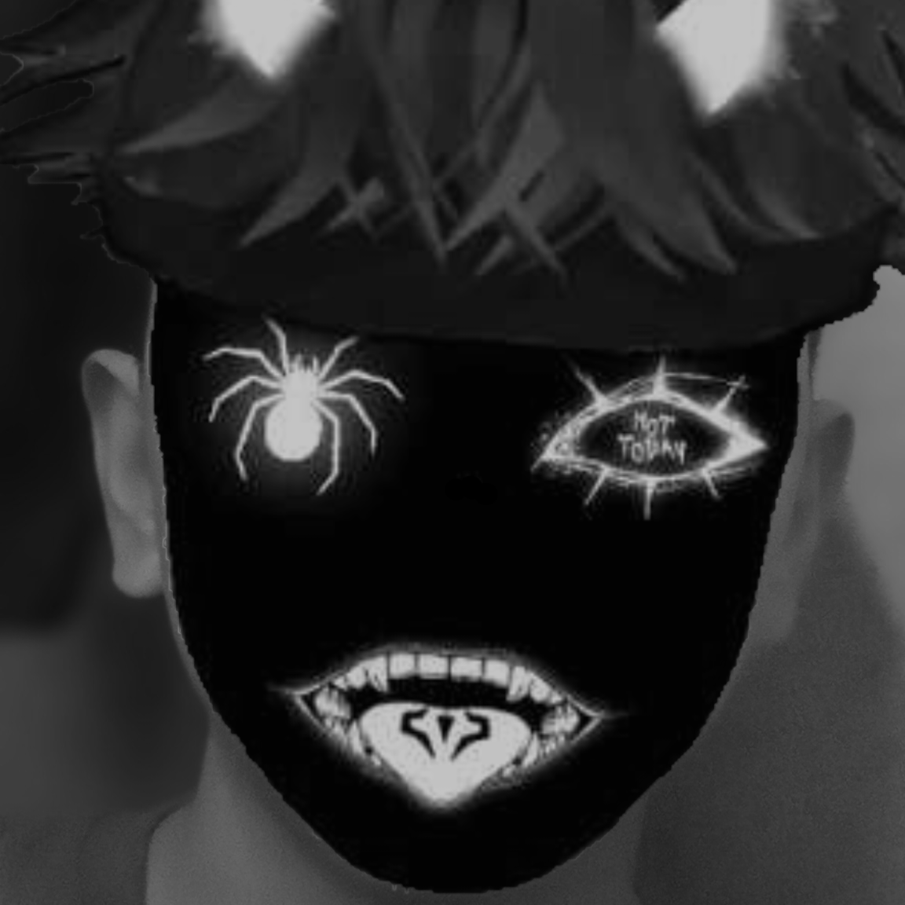

Hady Senpai イ

DJ ADUH MAMAE
hady zen
00:00
00:00
Selamat datang!
Indonesia:
Website ini dibuat oleh Hady Zen dengan cinta.
Perkenalkan nama saya hady, hobi saya adalah membayangkan waifu saya nyata dan bisa saya nikahi. Dan kenalin Ayanokoji Kiyotaka adalah husbu ter-favorit saya karena sifatnya yang dingin dan kkejam. saya memiliki beberapa husbu yaitu Futaro Uesugi, Oreki Houtaro, Yoshida, Izumi, dan Ayanokoji. Saya juga punya banyak waifu karena saya karbit, ini adalah beberapa nama waifu saya Itsuki Nakano, Sayu Ogiwara, Sakayanagi Arisu, dan masih banyak lagi soalnya saya lupa.
Terima kasih telah membaca info tidak berguna ini
Japanese:
このウェブサイトは、Hady Zenが愛情を込めて作成しました。
自己紹介させてください。私の名前はHadyです。私の趣味は、私のワイフが実在して、彼女と結婚できると想像することです。そして、冷酷で残酷な性格のせいで私が大好きな夫、綾小路清隆を紹介しましょう。上杉風太郎、折木奉太郎、吉田、和泉、綾小路という夫が何人かいます。私はカーバイドなので、ワイフもたくさんいます。これらは私のワイフの名前の一部です。中野五月、扇原さゆ、坂柳ありす、そして忘れてしまったのでもっとたくさんいます。
この役に立たない情報を読んでくれてありがとう
Kiyopon AI